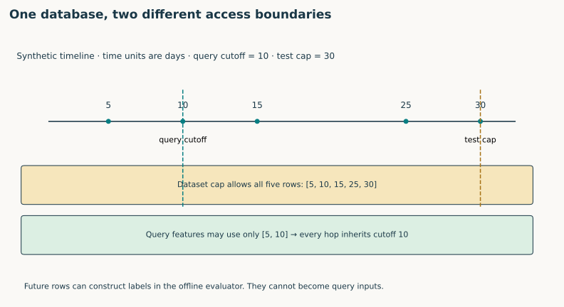
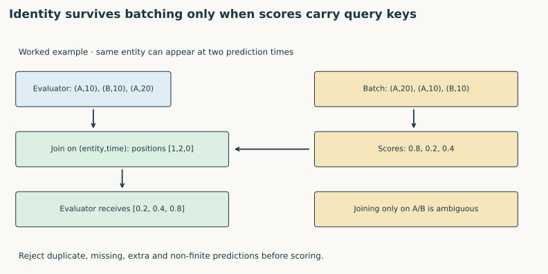
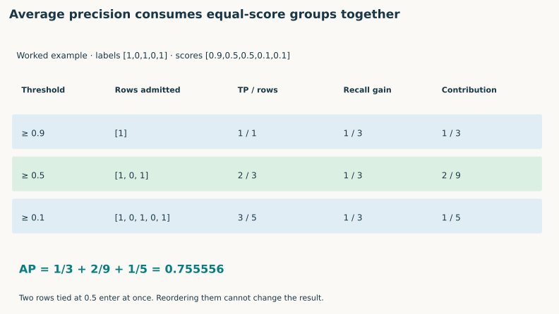

Year4 · Quarter1 · Lesson126
RelBench beta: from database to evaluated predictions
The win. Load a relational database and a prediction task, explain what each object contains, and deliver predictions that the evaluator can score without losing entity or time identity. You will also reconstruct the beta engagement rule and implement its average-precision metric.
Student notebook · Executed reference · Reference card · Reproduction contract
1 · Why a benchmark needs more than a database¶
Lesson 122 turned primary and foreign keys into graph structure. Lesson 123 restricted each query's neighborhood to its cutoff. Lesson 124 attached future outcomes to entity–time pairs. Lesson 125 encoded typed columns. Those mechanisms now need a common interface: which rows are inputs, which rows are questions, and who is allowed to see the answers?
A benchmark fixes a collection of prediction problems and their evaluation rules. A database alone cannot do that. Two researchers could use the same tables while predicting different outcomes, selecting different users, or measuring different metrics. Their scores would answer different questions.
In plain terms. The database is the world we observe. The task tells us which questions to ask about that world. The evaluator tells us how answers are judged.
This directly serves the course mission: evidence that relational learning helps is credible only when the relational model and its baselines face the same task. Today's narrow skill is making that task contract inspectable. This is an API and evaluation lesson; it introduces no new neural architecture. The next planned integer lesson, L127, studies the later RelBench v1 benchmark and its baseline.
Before reading on, write three short answers: What identifies a graph node? Why does a prediction need a time? Can an event after that time be used to construct the label?
2 · Freeze the version before interpreting the API¶
Our primary source is Fey et al., December 2023, arXiv:2312.04615v1, especially §4 and Figure 5. The curriculum calls this the “RelBench beta paper.” The same arXiv lineage later became the RDL position paper studied in L117. The separate Robinson et al. benchmark paper belongs to L127.
The beta describes two databases: Amazon books and Stack Exchange, with two tasks each. A release snapshot is a specific code revision, as opposed to whatever a repository's default branch contains today. Our historical code snapshot is 0433616ee94003fb15a4ac4d633e499d0f129077, dated November 27, 2023. It identifies itself as version 0.1.1. This is the last reachable pre-publication commit in the inspected history, not an author-attested experiment commit. Pinned source manifest.
| Operation | Beta source in this lesson | Executable F1 course tour |
|---|---|---|
| Package version | Historical 0.1.1 snapshot | relbench==1.1.0 |
| Load database | get_dataset(name="rel-stackex") |
F1Dataset(cache_dir=...) |
| Read database | dataset.db |
dataset.get_db() |
| Load task | dataset.get_task("rel-stackex-engage") |
DriverPositionTask(dataset, cache_dir=...) |
| Read splits | task.train_table, val_table, test_table |
task.get_table("train"/"val"/"test") |
| Evaluate | task.evaluate(pred) |
task.evaluate(pred, metrics=[mae]) |
The executable tour uses constructors to point at checksum-verified embedded archives. The registry alternative in 1.1.0 is get_dataset("rel-f1", download=True) followed by get_task("rel-f1", "driver-position", download=True). That alternative needs working remote archives. Neither spelling is advertised here as a version-independent API.
Scope check. This paper version contains no numerical predictive-results table. Reproduction means recovering and verifying its data/task/evaluation contract. It would be misleading to invent a beta score target, borrow L125's ROC-AUC target, or call a modern F1 score a beta result.
3 · Open the objects; do not stop at their names¶
A Table pairs a dataframe with metadata: its primary key, foreign-key destinations and optional time column. A Database contains a mapping from table names to these Table objects. A Dataset adds processing/loading behavior and validation/test cutoffs. A Task adds the entity being predicted, its target, prediction horizon, task tables and metric functions. Beta Table · Dataset · Task.
Worked example. A users table contains IDs 10, 20 and 30. An events table refers to user 20, a missing user ID, and user 99. All three foreign-key cells are syntactically possible, but only one resolves to a row. A null key means no recorded reference. A dangling key is non-null but has no matching target. Neither should silently become a valid edge.
TODO 1 — schema_audit. Count every row and column, validate primary-key uniqueness, and count resolved, null and dangling references separately. CHECK: the example must report one of each; duplicate primary keys must fail. The same function then examines every table in the real F1 database.
A primary key identifies a row within its table. The number of rows is not a safe upper bound on an arbitrary raw key. The released graph conversion may reindex keys; keep the mapping explicit. The schema audit operates on declared key values, not guessed positional indices.
4 · A database cap and a query cutoff solve different problems¶
The beta Dataset constructor retains a full database for task generation and exposes a copy capped at the test timestamp. This prevents ordinary model code from reading dated rows beyond the final test cutoff. It does not make every earlier training query safe. Beta Dataset implementation · paper §4.2.
Worked example. The database contains events at days 5, 10, 15, 25 and 30. The test cap is day 30. All five survive that cap. A training query at day 10 may use only days 5 and 10. Days 15 and 25 still leak if they enter that query's features or graph neighborhood.


The prediction horizon is the future interval whose outcome becomes the label. For a cutoff t and duration Δ, the beta helper uses the right-closed interval (t, t+Δ]: exclude the cutoff itself; include the endpoint. Inputs use history through t. The offline label builder needs future events, while the model must not receive them.
Predict: an event lands exactly at t. Does it establish prior activity? Does it make the future contribution label positive? Answer before checking the code. In the pinned release it establishes activity but does not enter the future label.
Training timestamps walk backward from validation − Δ in steps of Δ, until the database's earliest timestamp. This lets every training label window finish no later than validation. Do not replace this with an arbitrary random split.
Scope check. Timestamp filtering is not proof of historical availability. The beta interface does not supply ingestion histories or versions of mutable fields. Undated tables also need an explicit availability assumption. These limitations remain visible even if every cutoff comparison passes.
5 · Reconstruct the beta engagement task¶
The selected task is rel-stackex-engage. It asks whether an eligible user contributes a post, comment or vote in the next two years. The paper calls the metric average precision. Paper §4.4.1 · original task implementation.
Existence. The released implementation keeps users whose creation date is no later than the cutoff.
Eligibility. It keeps users with at least one contribution at or before the cutoff. Whether they contribute in the future must not affect whether they enter the task.
Outcome. For each eligible user, the label is 1 if any qualifying future contribution exists, otherwise 0. Three source tables are normalized to (user, time) events. Event IDs need not be unique across tables: this task asks about existence, not a cross-table event count.
Duration. The code specifies pd.Timedelta(days=365 * 2), exactly 730 days. From January 1, 2019, its upper endpoint is December 31, 2020. Two calendar years would end January 1, 2021. A leap year exposes the difference. The beta task's docstring says “3 years”; the executable constant and paper say two. We record that inconsistency rather than trusting the docstring.
| User at cutoff | Past activity | Future activity in (t,t+730d] |
Result |
|---|---|---|---|
| Existing user A | At t |
At t+1d |
Eligible, label 1 |
| Existing user B | Before t |
Exactly at endpoint | Eligible, label 1 |
| Existing user C | None | At t+2d |
Ineligible |
| Existing user D | Before t |
One second after endpoint | Eligible, label 0 |
TODO 2 — engagement_table. Implement eligibility and labels separately. CHECK: deleting all future events must preserve the eligible entity–time keys, while changing the labels. Permuting input rows must preserve the task. The standalone checker additionally compares the function with the unmodified beta class and an independent SQL query.
Our normalized helper excludes null users and the raw community sentinel −1 from all activity sources. The historical source filters that sentinel in posts/comments, but only nulls in votes. The source-parity fixtures use real-user vote IDs; the full recovery operator compares all rows and rejects a mismatch instead of hiding this defensive difference. Reindexed artifacts may represent such references differently, which is another reason to verify archive identity.
6 · Hidden targets are only one half of evaluation integrity¶
A public test table contains the query identity but hides its target. The beta task retains a separate full test table for evaluation; accessing task.test_table initializes that reference in the historical API. The modern tour uses get_table("test"). This is an API convention for separating model inputs from scoring, not a security boundary against an author who possesses the files.
A query key combines the target entity and prediction time. Driver A on one date and driver A on another date are different questions. Sampling or batching may rearrange them. An evaluator receiving an ordinary array cannot infer that rearrangement.


Worked example. The evaluator expects (A,10), (B,10), (A,20). A batch returns (A,20):0.8, (A,10):0.2, (B,10):0.4. The correct score array is [0.2,0.4,0.8]. Returning the batch's [0.8,0.2,0.4] has the right length and the wrong meaning.
TODO 3 — align_predictions. Require an exact one-to-one match between query keys and prediction keys; gather scores in query order. CHECK: reject duplicates, missing keys, extra keys and non-finite scores. Joining only on entity must not accidentally merge different times. This contract concerns unique task queries; repeated sampled neighbor IDs inside a GNN batch are a different object.
The F1 tour freezes a predictor using only the median training label, attaches its predictions to keys, shuffles the keyed output and aligns it again. A constant predictor alone cannot expose an ordering error, so the separate nonconstant CHECK fixture is essential.
7 · Average precision is a threshold calculation¶
A binary label is 0 or 1. A score ranks examples from more likely positive to less likely positive; AP does not require calibrated probabilities. At a threshold, precision is the number of positives retrieved divided by all retrieved rows. Recall is positives retrieved divided by all positives in the evaluation set.
In plain terms. Lower the threshold. Each time you recover more positives, record how precise the retrieved set is. Weight that precision by how much recall you gained.
For distinct descending score thresholds indexed by k,
AP = Σ_k (recall_k − recall_(k−1)) × precision_k, with initial recall 0.
This is non-interpolated average precision. It is not ROC-AUC and not the trapezoidal area under a precision–recall curve. The pinned beta metric calls scikit-learn's average_precision_score; the library documents this weighting explicitly. Beta metrics · scikit-learn definition.
Worked example. Labels [1,0,1,0,1] have three positives. Scores [0.9,0.5,0.5,0.1,0.1] create three thresholds. At 0.9, precision is 1 and recall increases by 1/3. At 0.5, precision is 2/3 and recall increases by another 1/3. At 0.1, precision is 3/5 and the final recall gain is 1/3. Thus AP is 1/3 + 2/9 + 1/5 = 0.755556.


Ties. A score of 0.5 cannot admit one tied row while excluding another. Process the whole tie at once. Otherwise an arbitrary ordering of equal scores can change the reported score.
TODO 4 — average_precision. Sort descending, locate the ends of equal-score groups, compute cumulative positives and weight precision by recall increments. CHECK: equal scores for every row give AP equal to positive prevalence. Our explicit convention returns 0 when no positives exist, matching the reference's result; that degenerate split still deserves a warning in an experiment report. Reject nonbinary labels and non-finite scores.
8 · Execute the complete available-data package tour¶
The notebook embeds checksum-verified F1 database and driver-position task archives. There is no row cap or remote data dependency in its default execution. The complete course run exercises actual RelBench 1.1.0 objects, calls your schema/alignment functions and scores the fixed training-median predictor. MAE, mean absolute error, averages abs(prediction − target) in position units. It is appropriate for this regression task, whereas the beta engagement task is binary and uses AP.
Author-reference execution · complete F1 API tour · COURSE_ONLY.
| Table | Rows exposed after the test cap |
|---|---|
| constructor_results | 9,408 |
| constructor_standings | 10,170 |
| circuits | 77 |
| qualifying | 4,082 |
| drivers | 857 |
| results | 20,323 |
| races | 820 |
| standings | 28,115 |
| constructors | 211 |
74,063 rows, nine tables, 13 declared foreign-key relations. All 7,453 train / 499 validation / 760 test task rows are loaded. The training median is 13.333333; validation MAE 4.135571, test MAE 4.444671. All test predictions were independently rescored in SQL. Measured report · Independent audit.
The predictor has no hyperparameter search, stochastic training, checkpoint selection or seed ensemble. Its fixed shuffle seed changes only presentation order. Repeating an identical deterministic evaluation over “seeds” would not create meaningful uncertainty. The measured scores show that the API path works; they do not establish model superiority or reproduce an RDL result.
Compatibility note. We request only metrics=[mae]. RelBench 1.1.0's additional RMSE helper calls a scikit-learn argument removed from the installed version. The first unrestricted evaluator call failed for that reason. Selecting the declared MAE metric preserves its calculation and makes this dependency boundary explicit. The author environment is recorded separately from the proposed Colab setup.
9 · What has—and has not—been reproduced¶
The fresh source audit runs the original beta task class, Dataset and test-mask/evaluator path. It checks 82 synthetic task/cutoff cases against both our implementation and independent SQL, and 200 AP cases against the released metric. These cases establish tested semantics, not original-data identity. The recovery operator's complete reconstruction path also passes a synthetic archive-table test and rejects a corrupted label.
All seven original/alternate database, task and raw-data endpoint probes returned 404 on September 27, 2026. A web-archive query timed out. No matching historical archive was recovered. The beta database hash starts dfb84faa; the later L125 database hash starts deb00ccd. They are not interchangeable. Availability audit.
| Evidence | Status | Permitted conclusion |
|---|---|---|
| Pinned beta source + synthetic task/evaluator audit | PASS | Tested source semantics agree |
| Complete v1 F1 database/task API tour | PASS · COURSE_ONLY | All available rows and predictions audited |
| Full historical beta archive reconstruction | NOT_RUN · BLOCKED_DATA | Required bytes not recovered |
| Numerical beta paper-score reproduction | NOT_APPLICABLE | This version has no score table |
| Whole-paper/historical identity | NOT_ESTABLISHED | Cannot infer identity from passing fixtures |
| Learner mastery | PENDING_WRITTEN_DEFENSE | Author execution does not score your work |
The recovery operator requires the exact database and engagement archives, reconstructs every split, compares both original-source and archived labels, and verifies public test masking. Its full historical-data path remains unexecuted. Original beta training/model code is preserved in the notebook's source appendix; it contains stale rtb imports and is not presented as a validated trainer. No cloud training was launched; spending is $0.
10 · Lab, written exit and return visits¶
Run the four TODO/CHECK pairs, then execute the full F1 tour. Submit l126-report.json, keyed predictions, your implementations, and this written defense:
- Explain the difference between a database's final test cap and a training query's cutoff. Name one leak that survives the first.
- Trace one beta engagement label, including user existence, eligibility and both interval endpoints. Explain the leap-year effect.
- Explain why correct array length cannot establish correct evaluation. State the key you would carry through batches.
- Derive the worked AP value without running code. Explain why a tie must enter together.
- Separate source parity, complete modern-data execution and historical reproduction. Identify the missing artifacts precisely.
Exit rubric. Each item earns 0 (missing/incorrect), 1 (correct but incomplete), or 2 (correct with a concrete example). Passing requires all four live functions, a successful complete tour, at least 8/10, and no unresolved temporal, identity or reproduction-scope error. Paste your explanation to the teacher for feedback; ask follow-up questions wherever the source and implementation seem to disagree.
Spaced retrieval. Tomorrow, redraw the object boundaries and AP thresholds from memory. In seven days, diagnose a shuffled prediction file without opening this lesson. In thirty days, inspect another benchmark's dataset/task/evaluator interface and identify which historical claims its artifacts actually support.
Primary-source reading ledger¶
Read the full beta paper, with §4 as today's close reading. For §§1–2, state the problem and task-table idea in your own words. For §3, trace the schema → entity graph → temporal computation graph → head route already developed in L117 and L122–125. For §4, map each package promise to a checked API operation. For §§5–7, choose one proposed research direction and explain why this lesson's evidence does not establish that claim. Then inspect the pinned task, dataset and metric source linked above.
Carry this forward. Freeze the entire neural training and selection protocol for RelBench v1. Continue to Lesson 127.